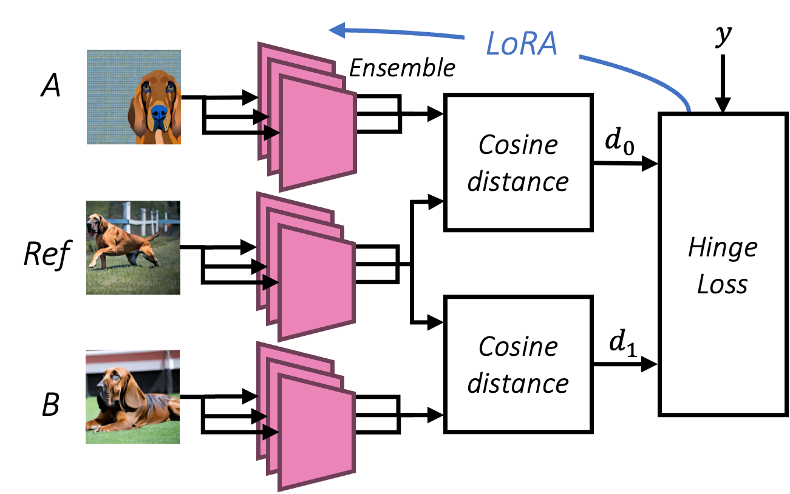

DreamSim: Learning New Dimensions of
Human Visual Similarity using Synthetic Data
|
1MIT
|
2Weizmann Institute of Science
|
3Adobe Research
|
|
* Equal contribution, order decided by random
seed
|

Which image, A or B, is most similar to the reference?
We generate a new benchmark of synthetic image triplets that span a wide range of mid-level variations, labeled with human similarity judgments.
The dots below each image indicate which image is considered most similar to the reference by humans vs several existing metrics and our new metric, DreamSim.
Abstract
|
Current perceptual similarity metrics operate at the level of pixels and patches.
These metrics compare images in terms of their low-level colors and textures, but
fail to capture mid-level similarities, and differences, in image layout, object poses,
and semantic content. In this paper, we develop a perceptual metric that assesses
images holistically. Our first step is to collect a new dataset of human similarity
judgments over image pairs that are alike in diverse ways. Critical to this dataset
is that judgments are nearly automatic and shared by all observers. To achieve
this we use recent text-to-image models to create synthetic pairs that are perturbed
along various dimensions. We observe that popular perceptual metrics fall short
of explaining our new data, and we introduce a new metric, DreamSim, tuned to
better align with human perception. We analyze how our metric is affected by
different visual attributes, and find that it focuses heavily on foreground objects and
semantic content while also being sensitive to color and layout. Notably, despite
being trained on synthetic data, our metric generalizes to real images, giving strong
results on retrieval and reconstruction tasks. Furthermore, our metric outperforms
both prior learned metrics and recent large vision models on these tasks.
|
Installation and Usage
Installation:
pip install dreamsim
Preliminaries:
from dreamsim import dreamsim
from PIL import Image
model, preprocess = dreamsim(pretrained=True, cache_dir="~/.cache")
Usage:
# Feature extraction
img1 = preprocess(Image.open("img1_path"))
embedding = model.embed(img1)
# Perceptual similarity metric
img1 = preprocess(Image.open("img1_path"))
img2 = preprocess(Image.open("img2_path"))
distance = model(img1, img2)
Method

Our perceptual metric is a pairwise image distance, computed as the cosine distance
between concatenated backbone model features. We train via a hinge loss on image triplets,
training via
Low-Rank Adaptation (LoRA).
Nearest Neighbors Experiment
Nearest-neighbor retrieval.
We perform a nearest neighbor search on the ImageNet-R and COCO datasets using different metrics.
Although the datasets include images outside of our training domain, our model consistently retrieves neighbors with similar appearance and class to that of the query image.
Inversion Experiment
Feature inversion across different metrics and image priors.
Given a target image, we optimize for an image, where the objective is to match the target image
embedding of a given backbone.
Without any image prior (Optimization), our metric recovers better the color, shape and semantics
of the target image. With a weak image prior (DIP Inversion), our metric is better able to reproduce scene
structure and semantics. Using a diffusion model as a strong prior, our metric better captures overall semantics
and scene appearance.
Acknowledgements
We thank Jim DiCarlo, Liad Mudrik, Nitzan Censor for fruitful discussions throughout the project. Additionally, we thank Narek Tumanyan for his insightful comments over the course of the project. Finally, we thank Michelle Li for proofreading sections of this paper and offering helpful comments.
This work was supported by the NSF GRFP Fellowship to Shobhita Sundaram, the Meta PhD Fellowship to Lucy Chai, the Israeli Science Foundation (grant 2303/20) to Tali Dekel, and the Packard Fellowship to Phillip Isola.
|
Bibtex
@article{fu2023learning,
title={Learning New Dimensions of Human Visual Similarity using Synthetic Data},
author={Stephanie Fu* and Netanel Tamir* and Shobhita Sundaram* and Lucy Chai and Richard Zhang and Tali Dekel and Phillip Isola},
journal={arXiv:ID},
year={2023}
}